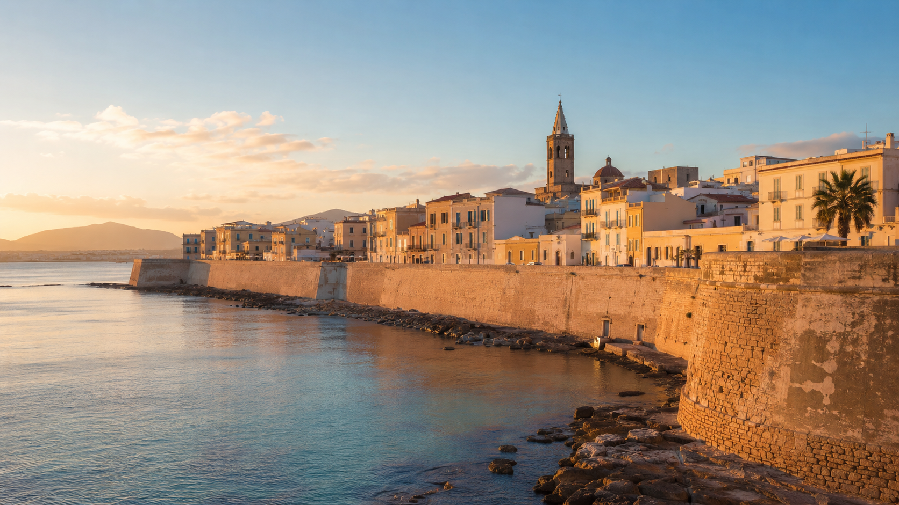
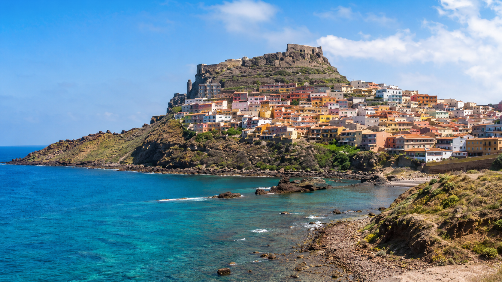
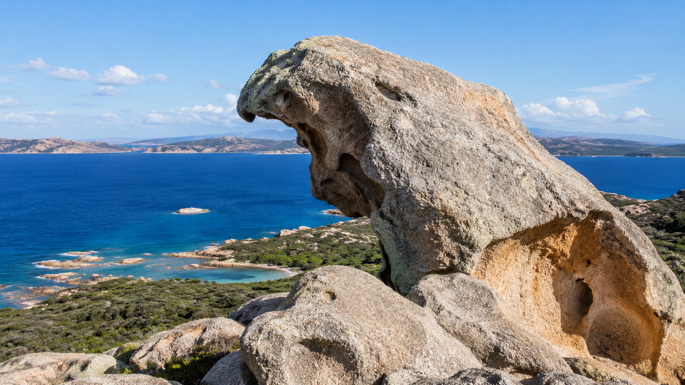
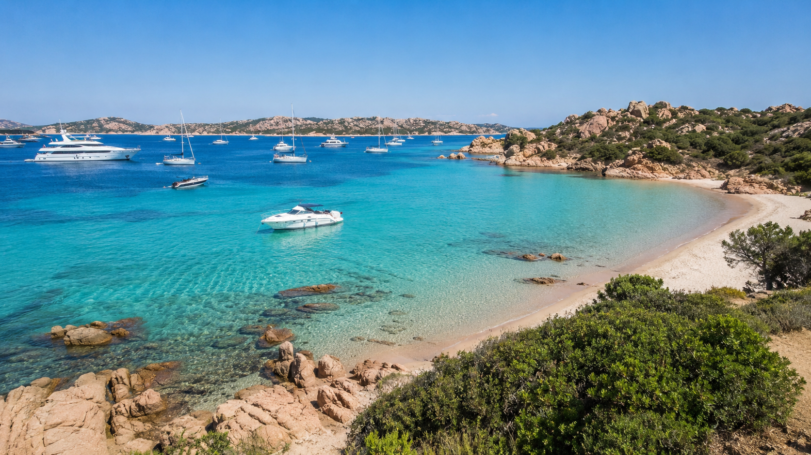
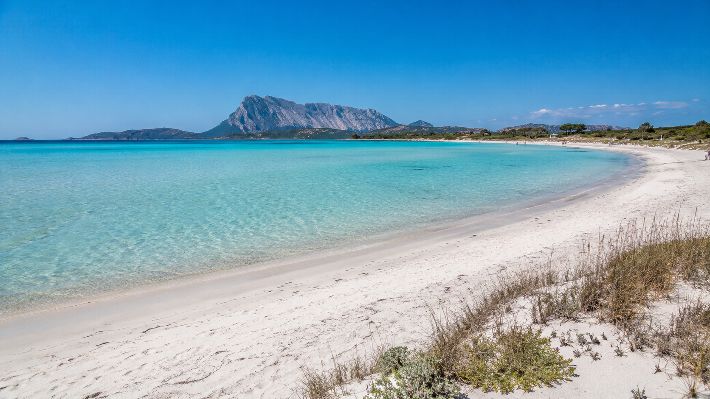
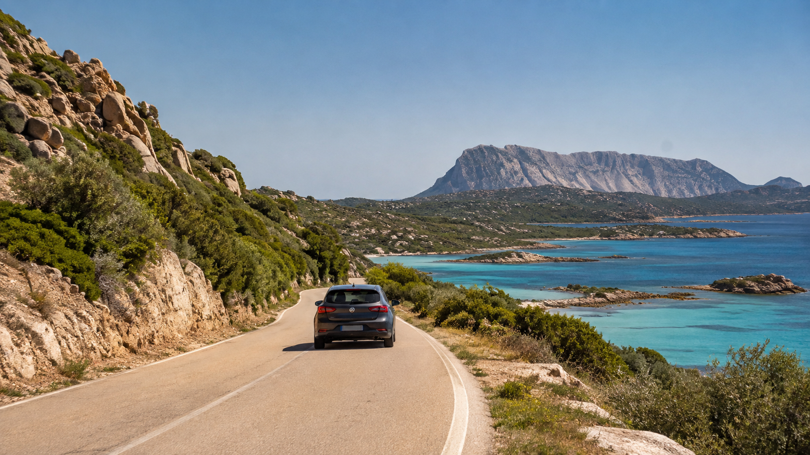

Priamy let z Bratislavy, požičané auto, festival medzi plážami a archeologickými lokalitami, žulový medveď nad Palau, trajekt na La Maddalenu a napokon more, ktoré miestami pripomína Karibik. Tento osemdňový roadtrip ukazuje sever Sardínie v celej jeho kráse. Pre štyroch dospelých môže kompletná cesta vyjsť približne na 5 000 eur, teda okolo 1 250 eur na osobu.
Sardínia nie je ostrov, ktorý by bolo najlepšie spoznávať z jedného hotelového rezortu. Jej najväčším bohatstvom je rozmanitosť: historické mestá postavené na skalách, žulové pobrežie, vetrom vytvarované prírodné monumenty, borovicové lesy, ostrovy, lagúny, biele pláže a more meniace farbu od tmavomodrej po takmer priesvitnú tyrkysovú.
Na severe sa navyše vzdialenosti dajú zvládnuť autom bez každodenných vyčerpávajúcich presunov. Za osem nocí možno spojiť katalánsku atmosféru Alghera, stredoveké Castelsardo, festival Isole che Parlano, Palau, súostrovie La Maddalena, Capreru, žulové útvary Gallury, Costa Smeralda aj najkrajšie pláže pri San Teodore.
Základný plán cesty
Termín: 5. – 13. september 2026 Počet cestujúcich: štyria dospelí Dĺžka pobytu: osem nocí Odlet: Bratislava Prílet: Alghero Doprava po ostrove: požičané auto Predpokladaná trasa: 850 až 1 050 kilometrov Odporúčané auto: kompaktný crossover alebo väčší hatchback Orientačný kompletný rozpočet: približne 4 500 až 5 500 € za štyroch Realistický stred: približne 5 000 € za štyroch, teda 1 250 € na osobu
Navrhovaná trasa:
Alghero – Castelsardo – Palau – La Maddalena – Caprera – Costa Smeralda – San Teodoro – Alghero
Ako sa dostať na Sardíniu zo Slovenska
Priamy let Bratislava – Alghero
Najväčšou výhodou tejto cesty je priame spojenie zo Slovenska. Letisko Bratislava má v letnom letovom poriadku 2026 priame lety do Alghera spoločnosťou Ryanair.
Na modelový termín cesta veľmi dobre vychádza:
- sobota 5. septembra: Bratislava 13:00 – Alghero 15:00,
- nedeľa 13. septembra: Alghero 9:00 – Bratislava 10:55.
Let trvá približne dve hodiny. Letisko Bratislava uvádza spojenie do Alghera počas hlavnej časti sezóny každý deň, konkrétne časy sa však líšia podľa dňa v týždni. Pred nákupom treba vždy skontrolovať aktuálny rozvrh aj rezervačný systém dopravcu.
Na letisko je vhodné prísť najmenej dve hodiny pred odletom, najmä pri podanej batožine a počas letnej prevádzky.
Koľko môžu stáť letenky
Ceny leteniek sú dynamické. Pre štyroch dospelých treba do rozpočtu zaradiť:
- spiatočné letenky,
- štyri malé osobné batožiny,
- dve spoločné podané alebo väčšie kabínové batožiny,
- prípadný výber sedadiel,
- prípadnú službu Priority.
Realistický odhad za štyroch: 600 až 900 €.
Pri dobrej akcii a cestovaní iba s malou batožinou môže byť suma nižšia. Na osemdňový roadtrip však nie je príliš praktické, aby každý cestoval iba s malou taškou pod sedadlom.
Prečo si požičať auto
Bez auta možno navštíviť Alghero alebo jedno vybrané letovisko. Celý sever Sardínie je však autom podstatne dostupnejší.
Auto umožní:
- zastavovať na vyhliadkach,
- dostať sa k odľahlejším plážam,
- navštíviť Castelsardo aj vnútrozemie Gallury,
- večer sa vrátiť z festivalu,
- odviezť sa k Roccia dell’Orso,
- prepraviť sa trajektom na La Maddalenu,
- prejsť ostrov Caprera,
- kombinovať viac ubytovaní bez prenášania batožiny autobusmi.
Pre štyroch dospelých by som nevyberal najmenšiu kategóriu. Fiat 500 alebo podobné miniauto môže mať problém so štyrmi kuframi.
Vhodnejšia je veľkosť približne ako:
- Fiat Tipo,
- Volkswagen Golf,
- Peugeot 308,
- Fiat 500X,
- Opel Mokka,
- Jeep Renegade alebo podobné vozidlo.
Na čo si dať pozor v požičovni
Najnižšia cena nemusí byť najvýhodnejšia. Treba skontrolovať:
- výšku spoluúčasti,
- poistenie skiel, pneumatík a podvozka,
- palivovú politiku,
- počet zahrnutých kilometrov,
- poplatok za ďalšieho vodiča,
- podmienky neskorého prevzatia,
- výšku blokácie na kreditnej karte,
- povolenie prepraviť auto trajektom na La Maddalenu.
Nie každá požičovňa má rovnaké pravidlá pre trajekty. Pred rezerváciou je dôležité overiť, či možno konkrétne vozidlo odviezť z Palau na La Maddalenu a či poistné krytie zostáva platné aj počas plavby a na ostrove.
Blokácia na kreditnej karte nie je súčasťou ceny
Požičovňa môže na karte dočasne zablokovať približne 500 až 1 500 €, pri základnom poistení niekedy aj viac.
Táto suma nie je bežným výdavkom a po bezproblémovom vrátení vozidla sa odblokuje. Cestovateľ ju však musí mať na účte alebo v dostupnom limite kreditnej karty.
Podrobný itinerár na osem nocí
1. deň – sobota 5. septembra: prílet do Alghera

Po prílete okolo 15:00 si prevezmete auto priamo na letisku. Do centra Alghera je to približne 15 minút jazdy.
Prvý večer netreba preplniť programom. Najlepšie je ubytovať sa, prejsť sa po historickom centre a absolvovať večernú promenádu po hradbách.
Alghero sa často označuje za „malú Barcelonu Sardínie“. Katalánsky vplyv je viditeľný v architektúre, názvoch ulíc, tradičnej kuchyni aj miestnom variante katalánčiny.
Čo stihnúť
- historické hradby,
- prístav,
- veže starého mesta,
- večerný západ slnka,
- prvú sardínsku večeru,
- zmrzlinu alebo aperitív pri promenáde.
Ubytovanie
Najpraktickejší je apartmán na okraji centra alebo pri pláži Lido s parkovaním. Ubytovanie priamo v starom meste je romantickejšie, ale parkovanie môže byť komplikované.
Orientačná cena za jednu noc pre štyroch: 180 až 260 €.
2. deň – nedeľa 6. septembra: Alghero a Castelsardo
Dopoludnia možno ešte zostať v Alghere alebo sa vybrať smerom k Capo Caccia. Ak by ste chceli navštíviť Neptúnovu jaskyňu, treba počítať s dlhším programom a overiť si prevádzku lodí aj schodiska.
Poobede pokračujte do Castelsarda. Cesta trvá približne hodinu a štvrť, podľa premávky a zastávok.
Castelsardo – jedno z najfotogenickejších miest Sardínie

Castelsardo je postavené na skalnom výbežku nad morom. Farebné domy stúpajú od pobrežia k hradu Doria a vytvárajú siluetu, ktorú možno spoznať už z diaľky.
Nie je to iba miesto na jednu panoramatickú fotografiu. V starom meste sa zachovali:
- úzke kamenné uličky,
- remeselné dielne,
- tradícia pletenia košíkov,
- hradné opevnenie,
- kostoly a výhľady na záliv Asinara.
Región zároveň ukrýva archeologické lokality, megalitické pamiatky a známy prírodný útvar Roccia dell’Elefante.
Roccia dell’Elefante – Slonia skala

Niekoľko kilometrov od Castelsarda sa priamo pri ceste nachádza skala, ktorú erózia vytvarovala do podoby slona. V jej vnútri sa nachádzajú staroveké pohrebné priestory typu domus de Janas.
Najlepšie je zastaviť sa tu pri odchode z Castelsarda nasledujúce ráno.
Ubytovanie
Vyberte si apartmán na okraji historického centra alebo v oblasti Lu Bagnu. Parkovanie pri najvyššej časti starého mesta býva komplikované.
Orientačná cena za jednu noc pre štyroch: 140 až 220 €.
3. deň – pondelok 7. septembra: Castelsardo – Palau
Po raňajkách sa zastavte pri Slonej skale a pokračujte na severovýchod Sardínie.
Priama cesta do Palau zaberie približne dve hodiny, no bola by škoda prejsť ju bez zastávok.
Možné odbočky:
- Santa Teresa Gallura,
- Capo Testa,
- žulové pobrežie Gallury,
- malé pláže severného pobrežia,
- vyhliadky smerom na Korziku.
Po príchode do Palau sa ubytujte na tri noci. Práve Palau je najlepšou základňou pre festival, Roccia dell’Orso, trajekt na La Maddalenu aj výlety smerom k Costa Smeralda.
Isole che Parlano: festival, kde je krajina súčasťou programu
Termín: 5. – 13. september 2026
Tridsiaty ročník festivalu Isole che Parlano sa uskutoční v Palau, La Maddalene, Arzachene a Luogosante.
Festival prepája:
- súčasnú a tradičnú hudbu,
- fotografiu,
- sardínske tradície,
- archeológiu,
- miestne produkty,
- ochutnávky,
- detské dielne,
- koncerty pri západe slnka.
Jeho najväčšou výhodou je prostredie. Program sa nekoná iba v koncertných sálach, ale aj na plážach, pri archeologických lokalitách, vo vidieckych kostoloch, na námestiach, pri majákoch a v borovicových hájoch.
Organizátori potvrdili termín aj základnú koncepciu festivalu. Kompletný denný program však v čase prípravy článku ešte nebol zverejnený.
To znamená, že cestu možno naplánovať už teraz, ale konkrétne koncerty, miesta a prípadné rezervácie bude treba skontrolovať neskôr.
4. deň – utorok 8. septembra: La Maddalena a Caprera autom
Z Palau sa autom dostanete priamo na trajekt smerujúci na La Maddalenu.
Plavba trvá približne 15 minút. Na linke premávajú spoločnosti Delcomar a Maddalena Lines a počas sezóny je spojenie veľmi časté. Aktuálny cestovný poriadok pre konkrétny septembrový deň treba skontrolovať pred cestou.
Oplatí sa vziať auto na trajekt?
Áno, najmä ak chcete:
- prejsť panoramatickú cestu okolo La Maddaleny,
- zastavovať pri menších zátokách,
- pokračovať na Capreru,
- navštíviť pláže mimo mesta,
- nebyť závislí od miestnych autobusov.
Ak plánujete iba historické centrum mesta La Maddalena a organizovaný lodný výlet, auto možno nechať v Palau.
Orientačná cena trajektu
Pre štyroch dospelých a jedno auto treba na spiatočnú cestu počítať približne s 70 až 110 €. Ide o bezpečný orientačný rozpočet; presná suma závisí od dopravcu, dĺžky auta, termínu a poplatkov. Oficiálne ceny treba overiť priamo v rezervačnom systéme dopravcu.
La Maddalena

Mesto má príjemné centrum okolo prístavu Cala Gavetta, malé námestia, kaviarne, reštaurácie a uličky s historickými domami.
Po krátkej prechádzke sa oplatí pokračovať autom po okružnej pobrežnej ceste.
Medzi zaujímavé zastávky patria:
- Bassa Trinità,
- Spalmatore,
- Cala Lunga,
- vyhliadky na menšie ostrovy,
- Testa di Polpo na neďalekom ostrovčeku Giardinelli.
Caprera
La Maddalena je krátkym mostom spojená s Caprerou. Ostrov je divokejší, zelenší a prírodnejší.
Nájdete tu:
- borovicové lesy,
- žulové kopce,
- pešie chodníky,
- malé zátoky,
- Garibaldiho historické sídlo,
- výhľady na súostrovie.
Pozor na Cala Coticcio
Cala Coticcio patrí k najkrajším plážam Caprery, ale prístup je regulovaný. Od mája 2026 funguje kontrolovaný režim vstupu na chodníky do oblastí Cala Coticcio a Cala Brigantina. Pred návštevou treba overiť aktuálne pravidlá, dostupnosť a prípadnú povinnosť sprievodcu.
Na náhodný výlet bez prípravy preto radšej vyberte dostupnejšie zátoky alebo panoramatickú jazdu po ostrove.
Alternatíva: celodenná plavba po súostroví
Trajekt s autom vás dostane na hlavné ostrovy La Maddalena a Caprera. Najkrajšie malé ostrovy Spargi, Budelli, Razzoli a Santa Maria však uvidíte iba z lode.
Skupinové plavby z Palau stoja v druhej polovici septembrového obdobia približne:
- 45 až 60 € na dospelého,
- plus prípadný mestský alebo parkový poplatok.
Pre štyroch dospelých je vhodné počítať s približne 200 až 260 €.
Lodný výlet nie je zahrnutý v základnom rozpočte, pretože ho možno nahradiť trajektom s autom. Kto chce vidieť najkrajšie farby súostrovia, môže absolvovať obe možnosti.
Plavba môže byť zrušená alebo upravená pri silnom vetre. Sever Sardínie ovplyvňuje mistral, preto je dobré nechať si v programe určitú časovú rezervu.
5. deň – streda 9. septembra: Roccia dell’Orso, Arzachena a festival
Roccia dell’Orso – sardínsky medveď nad morom
Nad Palau sa vo výške viac než 120 metrov nachádza jeden zo symbolov severnej Sardínie.
Roccia dell’Orso je žulový útvar, ktorý z určitého uhla pripomína medveďa pozerajúceho na more. Jeho dutiny, oblúky a zaoblené steny vytvorili vietor, voda, soľ a dlhodobé zvetrávanie.
Skala slúžila ako orientačný bod námorníkom už v minulosti. Z jej okolia sa otvára panoráma Palau, ostrovov La Maddalena a pri dobrej viditeľnosti aj vzdialenejšieho pobrežia.
Od parkoviska vedie ku skale krátky stúpajúci chodník. Treba počítať s:
- nerovným povrchom,
- minimom tieňa,
- vetrom,
- klzkou žulou po daždi,
- obmedzeným parkovaním.
Najkrajší čas je ráno alebo neskoré popoludnie.
Archeologické okolie Arzacheny
Po návšteve Medvedej skaly možno pokračovať smerom k Arzachene. Oblasť je známa nuragmi, hrobkami obrov a ďalšími stopami dávnych sardínskych kultúr.
Program festivalu Isole che Parlano často využíva práve spojenie hudby, krajiny a archeologických miest. Presné lokality pre rok 2026 treba overiť po zverejnení kompletného programu.
Večer sa vráťte do Palau na festivalový koncert, výstavu alebo ochutnávku.
6. deň – štvrtok 10. septembra: Palau – Costa Smeralda – San Teodoro
Z Palau sa vydajte smerom na juhovýchod. Priama cesta do San Teodora by trvala približne hodinu a pol, no tento deň je vhodný na pomalší presun cez jednu z najslávnejších častí Sardínie.
Možné zastávky:
- Cannigione,
- Porto Cervo,
- Baia Sardinia,
- vyhliadky nad Costa Smeralda,
- žulové kopce pri San Pantaleu,
- Porto Rotondo,
- Golfo Aranci.
Costa Smeralda je známa luxusnými rezortmi a jachtami, ale netreba tu míňať stovky eur. Najväčším zážitkom sú pobrežné cesty, výhľady, malé pláže a zvláštne ružovkasté žulové skaly.
Večer sa ubytujte v San Teodore alebo v pokojnejšej oblasti Monte Petrosu.
San Teodoro: biele pláže a tyrkysové more

Oblasť San Teodora je ideálnym záverom roadtripu. Po niekoľkých dňoch presunov, miest, festivalov a trajektov prichádza čas na pláže.
K najznámejším patria:
- La Cinta,
- Cala Brandinchi,
- Lu Impostu,
- s’Isuledda,
- Capo Coda Cavallo,
- Cala Girgolu,
- Porto Taverna.
Oficiálny turistický portál Sardínie opisuje Cala Brandinchi ako jednu z najznámejších pláží Gallury, s bielym pieskom a vodou pripomínajúcou tropické oblasti. Jej prirodzeným pokračovaním je Lu Impostu.
7. deň – piatok 11. septembra: Cala Brandinchi a Lu Impostu
Na tieto dve pláže nemožno prísť bez prípravy.
Od 1. júna do 30. septembra 2026 platí regulovaný vstup. Rezervácia je povinná aj pri návšteve voľnej časti pláže a bez nej je zakázaný vstup po zemi aj od mora.
Ako funguje rezervácia
Rezervovať možno:
- od 18:00 dva dni pred návštevou,
- výhradne online alebo cez oficiálnu aplikáciu,
- až do vyčerpania dennej kapacity.
Po zaplatení príde QR kód, ktorý treba ukázať pri vstupe.
Environmentálny poplatok
- 1 € na osobu pre hostí registrovaných ubytovaní v San Teodore,
- 2 € na osobu pre ostatných návštevníkov.
Parkovanie nie je v poplatku zahrnuté.
Dôležité pravidlá
Na plážach je zakázané:
- odnášať piesok, mušle a kamene,
- vstupovať na duny,
- nechávať odpad,
- stanovať,
- fajčiť mimo vyznačených priestorov.
Cala Brandinchi má veľmi plytkú vodu. Je nádherná, ale pri nízkej hladine môže byť potrebné prejsť pomerne ďaleko, kým sa dá plávať. Lu Impostu je širšia a často pôsobí o niečo vzdušnejšie.
8. deň – sobota 12. septembra: Capo Coda Cavallo a návrat do Alghera

Posledné dopoludnie pri San Teodore venujte Capo Coda Cavallo alebo pláži La Cinta.
Capo Coda Cavallo
Polostrov ponúka výhľady na ostrovy Tavolara a Molara, biele zátoky a priezračné more. V okolí sa nachádzajú Salina Bamba, Cala Suaraccia a ďalšie menšie pláže.
Oficiálny turistický portál uvádza túto oblasť ako jednu z najvýraznejších častí pobrežia San Teodora, s výhľadmi na Tavolaru a s plážami Cala Brandinchi a Lu Impostu v bezprostrednom okolí.
Po obede sa vydajte späť do Alghera. Presun trvá približne dve a pol hodiny bez dlhších zastávok.
Poslednú noc je rozumné prespať v Alghere alebo pri letisku. Nedeľný let odlieta už o 9:00, takže noc v San Teodore by znamenala veľmi skorý odchod a zbytočný stres.
9. deň – nedeľa 13. septembra: návrat na Slovensko
Auto vráťte približne dve a pol hodiny pred odletom. Treba počítať s:
- dotankovaním,
- kontrolou vozidla,
- odovzdaním kľúčov,
- presunom do terminálu,
- odbavením batožiny.
Pri vrátení si vozidlo odfoťte zo všetkých strán, vrátane palivomera a kilometrov. Fotografie si ponechajte až do uvoľnenia blokácie na karte.
Kde sa ubytovať
Alghero – dve noci
Najlepší kompromis je okolie Lida alebo okraj historického centra. Výhodou je dostupné parkovanie, pešia vzdialenosť k promenáde a jednoduchý výjazd na letisko.
Orientačne za dve noci: 340 až 520 €.
Castelsardo – jedna noc
Vyberte apartmán s výhľadom a parkovaním pod historickým centrom alebo v oblasti Lu Bagnu.
Orientačne: 140 až 220 €.
Palau – tri noci
Najpraktickejšia je pešia vzdialenosť od prístavu, ale zároveň vlastné parkovanie. Počas festivalu môže byť centrum drahšie.
Lacnejšou alternatívou je:
- okolie Capo d’Orso,
- Cannigione,
- Arzachena,
- ubytovanie niekoľko kilometrov vo vnútrozemí.
Orientačne za tri noci: 440 až 750 €.
San Teodoro – dve noci
Priamo v San Teodore budete mať večer reštaurácie a centrum v pešej dostupnosti. Oblasť Monte Petrosu je pokojnejšia a praktickejšia pre Cala Brandinchi, Lu Impostu a Porto Taverna.
Orientačne za dve noci: 370 až 620 €.
Celkové ubytovanie
Pri apartmánoch pre štyroch dospelých s parkovaním treba počítať približne s:
1 300 až 1 950 € za osem nocí
Realistický stred je okolo 1 550 až 1 650 €.
Ceny boli orientačne kontrolované pre septembrový termín. Menia sa podľa dostupnosti, podmienok zrušenia, vybavenia a vzdialenosti od mora.
Čo ochutnať
Roadtrip nemusí byť iba o plážach. Sardínska kuchyňa je výrazne regionálna a od klasickej pevninskej talianskej kuchyne sa v mnohom odlišuje.
Ochutnať sa oplatí:
- malloreddus – malé sardínske cestoviny,
- culurgiones – plnené cestoviny, často so zemiakmi a syrom,
- fregola – drobné opekané cestoviny, často s morskými plodmi,
- pane carasau – tenký chrumkavý chlieb,
- porceddu – tradične pripravované pečené prasiatko,
- bottarga – sušené rybie ikry,
- pecorino sardo – ovčí syr,
- seadas – vyprážané pečivo so syrom a medom,
- miestne ryby a morské plody,
- vína Vermentino a Cannonau.
Pri štyroch dospelých sa oplatí kombinovať reštaurácie s apartmánmi s kuchyňou. Raňajky, voda, ovocie a časť obedov zo supermarketu dokážu výrazne znížiť celkovú cenu.
Kompletný rozpočet pre štyroch dospelých
Nasledujúci rozpočet je modelový. Nejde o garantovanú cenu zájazdu. Letenky, prenájom auta a ubytovanie sa môžu meniť každý deň.
Základné povinné a bežné výdavky
| Položka | Odhad za štyroch |
|---|---|
| Spiatočné letenky a batožina | 600 – 900 € |
| Ubytovanie na 8 nocí | 1 300 – 1 950 € |
| Prenájom auta s rozumným poistením | 450 – 700 € |
| Palivo | 120 – 170 € |
| Trajekt Palau – La Maddalena s autom | 70 – 110 € |
| Parkovanie, plážové poplatky a menšie vstupy | 100 – 180 € |
| Pobytové dane | 80 – 140 € |
| Jedlo a nápoje | 900 – 1 300 € |
| Cestovné poistenie | 80 – 160 € |
| Doprava alebo parkovanie pri Letisku Bratislava | 0 – 120 € |
| Základný súčet | 3 700 – 5 730 € |
Rozpätie je široké najmä pre rozdielne ceny leteniek, ubytovania a stravovania.
Realistický modelový rozpočet
Pre bežnú štvoricu, ktorá nechce dovolenku absolvovať extrémne lacno, ale zároveň nebude bývať v luxusných hoteloch, môže rozpočet vyzerať takto:
| Položka | Modelová suma |
|---|---|
| Letenky, batožina a sedadlá | 760 € |
| Ubytovanie | 1 550 € |
| Auto a poistenie | 550 € |
| Palivo | 135 € |
| Trajekt na La Maddalenu | 90 € |
| Parkovanie a vstupy | 130 € |
| Pobytové dane | 100 € |
| Jedlo a nápoje | 950 € |
| Cestovné poistenie | 100 € |
| Doprava alebo parkovanie v Bratislave | 75 € |
| Suveníry | 160 € |
| Finančná rezerva | 200 € |
| Spolu | 4 800 € |
To znamená približne:
1 200 € na osobu
Pri drahších letenkách alebo ubytovaní je bezpečnejšie počítať s približne:
5 000 až 5 200 € za štyroch, teda 1 250 až 1 300 € na osobu.
Palivo a kilometre
Celá cesta vrátane výletov môže predstavovať približne 850 až 1 050 kilometrov.
Pri spotrebe 6,5 až 7 litrov na 100 kilometrov sa minie približne 60 až 75 litrov paliva.
Priemerná samoobslužná cena benzínu na Sardínii bola koncom júla 2026 približne 1,99 € za liter.
Preto je rozumné vyčleniť 120 až 170 €.
Tankovanie so službou obsluhy môže byť drahšie než samoobslužné stojany. Pred vrátením auta si treba overiť, či zmluva požaduje plnú nádrž.
Parkovanie na Letisku Bratislava
Pri ceste vlastným autom treba pripočítať dlhodobé parkovanie.
Oficiálny cenník Letiska Bratislava uvádza pri ôsmich dňoch sumu približne 102 až 110 € podľa parkoviska a spôsobu rezervácie. V letnej sezóne funguje aj vzdialenejšie parkovisko P3 s odvozom cestujúcich k terminálu.
Pri štyroch ľuďoch môže byť parkovanie výhodnejšie než vlak, autobus alebo viacero transferov.
Táto položka sa nepočíta, ak vás na letisko niekto odvezie alebo použijete verejnú dopravu.
Suveníry a nákupy
Na suveníry je vhodné vyčleniť približne:
100 až 300 € za celú skupinu
Typické nákupy:
- sardínska keramika,
- výrobky z korku,
- malé tkané koberce a textílie,
- pletené košíky,
- šperky s koralom,
- pane carasau,
- cestoviny fregola,
- med,
- sladkosti,
- pecorino,
- bottarga,
- lokálne víno alebo likér.
Pri nákupe potravín treba myslieť na batožinu a teplotu. Tekutiny nad povolený limit musia byť v podanej batožine alebo kúpené po bezpečnostnej kontrole.
Rozpočet 160 € v modelovej kalkulácii znamená približne 40 € na osobu. Väčšie nákupy keramiky, koralu, vína alebo remeselných výrobkov môžu túto sumu výrazne zvýšiť.
Výdavky, ktoré nie sú zahrnuté v základnej cene
Voliteľná plavba medzi ostrovmi
Celodenný lodný výlet na Spargi, Budelli a ďalšie ostrovy:
200 až 260 € za štyroch.
Ležadlá a slnečníky
Súkromné plážové kluby môžu účtovať desiatky eur za jeden set denne. Pri dvoch dňoch treba počítať približne s:
80 až 180 € za skupinu, podľa pláže a radu od mora.
Voľné časti pláží možno využívať s vlastným uterákom alebo slnečníkom.
Výlet na Tavolaru
Lodná doprava alebo organizovaný výlet z Porto San Paolo:
približne 80 až 200 € za štyroch, podľa typu plavby.
Drahšie reštaurácie
Modelový rozpočet počíta s kombináciou supermarketov, pizzerií, trattorií a niekoľkých lepších večerí.
Každodenné obedy a večere v kvalitných reštauráciách môžu zvýšiť rozpočet o:
300 až 700 € za celú skupinu.
Dodatočný vodič
Podľa požičovne približne:
50 až 120 € za celý prenájom.
Ďalšia batožina
Dodatočný podaný kufor, Priority alebo zmena batožiny po rezervácii môže stáť:
50 až 150 € za osobu za oba smery.
Storno a zmeny rezervácií
Základné letenky a najlacnejšie ubytovanie nemusia umožňovať bezplatné zrušenie. Flexibilné podmienky môžu byť drahšie, ale pri ceste pre štyroch znižujú riziko veľkej finančnej straty.
Čo nie je výdavok, ale treba s tým počítať
Depozit za auto
Približne 500 až 1 500 €, dočasne zablokovaných na karte.
Kaucia za apartmán
Niektorí hostitelia môžu požadovať vratnú kauciu približne 100 až 300 €.
Finančná rezerva
Odporúčaná rezerva najmenej 200 až 400 € pre celú skupinu na:
- neplánované parkovanie,
- náhradný transfer,
- zmenu plavby,
- lieky,
- menšiu opravu batožiny,
- dodatočný kufor,
- núdzovú noc navyše.
Rezerva sa nemusí minúť, ale nemala by chýbať.
Cestovné a zdravotné poistenie
Európsky preukaz zdravotného poistenia je užitočný, ale nenahrádza plnohodnotné cestovné poistenie.
Poistenie by malo zahŕňať:
- liečebné náklady,
- úraz,
- zodpovednosť za škodu,
- batožinu,
- prípadné storno,
- asistenčnú službu,
- športové aktivity, ak plánujete potápanie alebo prenájom člna.
Pre štyroch dospelých na deväť dní treba počítať približne s 80 až 160 €, podľa rozsahu krytia a veku cestujúcich.
Liečebné výdavky, spoluúčasť, nákup liekov ani škoda na požičanom aute nie sú v modelovom rozpočte zahrnuté, ak ich nepokryje poistenie.
Tri rozpočtové scenáre
Úspornejšia verzia
- lacnejšie letenky,
- menšie apartmány mimo centier,
- jednoduchšie auto,
- viac varenia,
- trajekt bez lodného výletu,
- minimum platených ležadiel.
Približne 3 900 až 4 300 € za štyroch.
Realistická verzia
- batožina na týždeň,
- pohodlné apartmány s parkovaním,
- väčšie auto,
- kombinácia reštaurácií a vlastného stravovania,
- trajekt s autom,
- suveníry a finančná rezerva.
Približne 4 800 až 5 200 € za štyroch.
Pohodlnejšia verzia
- drahšie alebo flexibilné letenky,
- lepšie ubytovania,
- plné poistenie auta,
- každodenné reštaurácie,
- lodný výlet,
- platené ležadlá,
- väčšie nákupy a suveníry.
Približne 5 800 až 6 500 € za štyroch.
Ako cestu zlacniť bez pokazenia zážitku
Najväčšie úspory neprinesie vynechanie kávy alebo zmrzliny. Rozhodujú tri položky: letenky, ubytovanie a auto.
Oplatí sa:
- rezervovať letenky čo najskôr,
- vziať jeden spoločný kufor na dvojicu,
- bývať niekoľko kilometrov od Palau a San Teodora,
- vyberať apartmány s kuchyňou a parkovaním,
- porovnať poistenie auta už pred cestou,
- kúpiť vodu, raňajky a ovocie v supermarkete,
- využiť bezplatné časti pláží,
- zvoliť si buď trajekt s autom, alebo lodný výlet, ak je rozpočet obmedzený.
Nešetril by som na:
- príliš malom aute,
- cestovnom poistení,
- nejasnom poistení vozidla,
- poslednej noci pri Alghere,
- rezerváciách regulovaných pláží,
- finančnej rezerve.
Praktické upozornenia pri šoférovaní
V historických centrách sa môžu nachádzať zóny s obmedzenou premávkou. Nejazdite za zákazové značky iba preto, že navigácia ukazuje kratšiu cestu.
Pri parkovaní sledujte farebné značenie:
- modré miesta bývajú platené,
- biele spravidla bezplatné,
- žlté bývajú vyhradené.
Na plážových parkoviskách si nenechávajte viditeľne položené kufre, elektroniku ani doklady.
Sardínske cesty sú často kvalitné, ale niektoré pobrežné úseky sú úzke a kľukaté. Čas uvedený v navigácii treba chápať ako minimum, nie ako pevný harmonogram.
Pre koho je tento roadtrip ideálny
Najviac osloví cestovateľov, ktorí chcú:
- striedať pláže, mestá a prírodu,
- objavovať ostrov vlastným tempom,
- navštevovať vyhliadky a malé zátoky,
- spojiť kúpanie s kultúrou a festivalom,
- zažiť viac než jeden hotel a jednu pláž.
Menej vhodný je pre človeka, ktorý nechce často meniť ubytovanie, nerád šoféruje alebo očakáva výhradne oddychový pobyt pri bazéne.
Záverečné hodnotenie
Sever Sardínie patrí k najkrajším oblastiam, ktoré možno zo Slovenska absolvovať ako samostatný roadtrip.
Počas jednej cesty sa vystrieda:
- katalánska atmosféra Alghera,
- stredoveké Castelsardo,
- prírodná Slonia skala,
- festival medzi archeologickými lokalitami a plážami,
- Roccia dell’Orso nad Palau,
- trajekt s autom,
- La Maddalena a divoká Caprera,
- žulové pobrežie Costa Smeralda,
- biele pláže San Teodora,
- výhľady na Tavolaru.
Nie je to najlacnejšia dovolenka pri mori. Za približne 1 200 až 1 300 € na osobu však ponúka priamy let, osem nocí, auto, viacero oblastí, ostrovy, festival, pláže, jedlo aj suveníry.
A práve v tom je jej najväčšia sila: každý deň vyzerá úplne inak, no stále zostávate na jednom ostrove.
Sever Sardínie nie je iba miesto na kúpanie. Je to cesta medzi stredovekými mestami, žulovými skalami, ostrovmi a morom, ktorého farby sa len ťažko opisujú bez toho, aby to znelo prehnane.